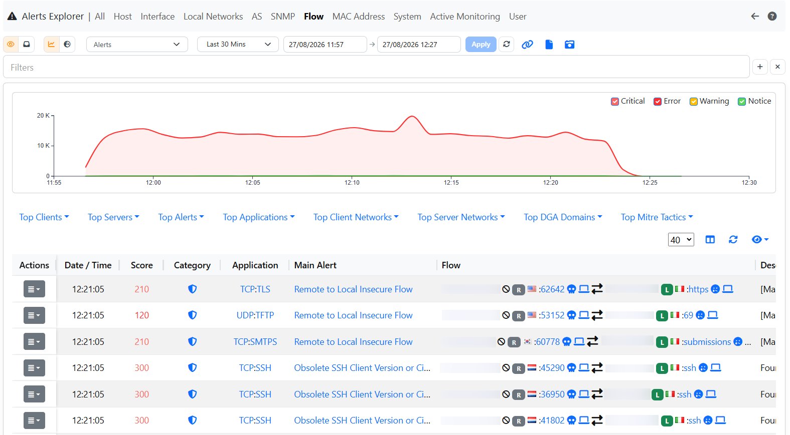

Оповещения о потоке
Во время своего выполнения ntopng может обнаружить аномальные или подозрительные потоки, для которых вызывает специальные оповещения о потоке.
Оповещения о потоке могут быть обнаружены с помощью перехватчиков/проверок в разное время (назовем их контрольно-пропускные пункты) в течение жизненного цикла потока:
Когда создается поток
Когда обнаружен протокол приложения уровня 7
С периодическими проверками (например, каждую минуту)
Когда поток завершается
Может случиться так, что в одной и той же контрольной точке будет обнаружено несколько проблем (посредством разных проверок). В этом случае только преобладающий оповещение (с наивысшим баллом) срабатывает и сохраняется в базе данных, однако информация о «вторичных» проблемах также сохраняется в том же оповещении и отображается в пользовательском интерфейсе. Это происходит для каждой контрольной точки, поэтому на каждую контрольную точку срабатывает не более одного оповещения.
Суммируя:
В случае одновременного обнаружения нескольких проблем т, выдается одно оповещение (уведомляется через Уведомление конечные точки и вставлены в базу данных), это предупреждение будет сообщать о преобладающий выпуск и доп. «второстепенные» вопросы.
В случае обнаружения дополнительных проблем на более поздней контрольной точке во времени т+1, новое предупреждение выдается только в том случае, если обнаружена проблема с более высоким баллом. Примечание. При использовании Clickhouse в качестве базы данных предупреждение о потоке всегда будет отображаться. отчет (помимо основного вопроса) все дополнительные проблемы, обнаруженные в течение всего жизненного цикла потока, как следствие того, как оповещения о потоках были реализованы на Clickhouse (как взгляд на исторические потоки). То же самое не происходит при использовании SQLite, где все оповещения, вплоть до момента обнаружения преобладающего оповещения, хранятся в базе данных в результате способа отправки предупреждений.
Оповещения потока не только содержат события (основные и второстепенные), вызвавшие срабатывание оповещения, они также содержат все детали потока, включая IP-адреса источника и назначения, протокол приложения уровня 7, и порты.
Оповещения о потоке всегда связаны с событиями и поэтому никогда не помолвлен или выпущенный, они размещены в прошлом оповещения напрямую.

Оповещения, которые требуют внимания человека и должны обрабатываться вручную (например, связанные с проблемами безопасности), также размещаются на странице, обозначенной значком глаза, до тех пор, пока они не будут подтверждены.

Страница важных прошлых оповещений
Подробности действие оповещения о потоке открывает его подробную информацию (предупреждение, одноранговые узлы потока, протокол, трафик и обнаруженные проблемы) на боковой карте. Выключите Подробная карта переключитесь над столом, чтобы открыть вместо этого страница с полной информацией. Оповещения автономной системы всегда открывают полную страницу. The page title shows the path : нажмите Обозреватель оповещений чтобы вернуться к оповещениям.
Карта оповещений
На Поток и Хозяин вкладок, кнопка глобуса рядом с кнопкой диаграммы заменяет диаграмму карта мира, на которой каждая страна раскрашена по количеству предупреждений ее хостов. The map needs ClickHouse and the GeoIP databases.